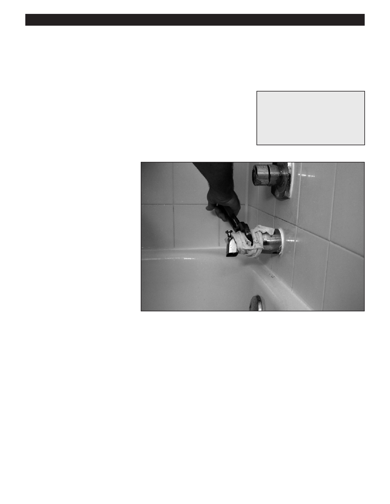

PA RT I C I PA N T R E S O U R C E G U I D E
Replacing a Tub Spout
If the shower water is slow or non-existent in a one- or two-handle tub faucet, replace the
tub spout and its diverter lever.
Safety
Tools and Materials Needed
You may want to wear hand protection.
Replacement tub spout (either
a screw-on or slip-on type)
Allen wrench
Pipe joint compound
How-to Steps
1. Shut off the water to the faucet.
2. Remove the spout.
• If it is held on with a screw,
unscrew it with an Allen wrench.
• If there are no screws, use a
wrench to turn and unscrew
faucet.
3. Spread pipe joint compound on the
threads of the spout pipe before
replacing the spout itself.
4. Replace the spout.
5. Turn on the water and check the
operation of the diverter valve and
the flow of the shower water.
Notes:
52